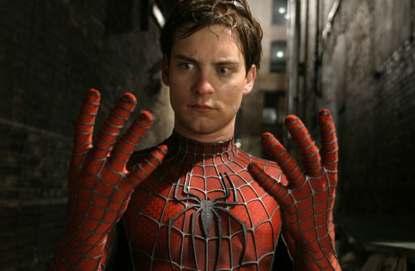

Siderman Homecoming is the better mvoie because it uses special effects in a very effective matter. The plot is not a copy-paste of the original story which makes the characters feel fresh.
Spiderman (2002) is good because the role of spiderman was played by Tobey Maguire. He did a great job in emotion heavy scenes as well as intense parts of the film!